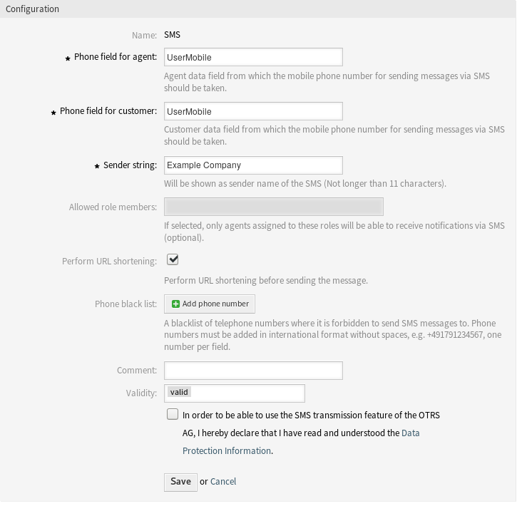

Cloud Services¶
Use this screen to add cloud services to the system. A fresh OTRS installation doesn’t contain any configured cloud services by default. The cloud service management screen is available in the Cloud Services module of the OTRS Group Services group.

Cloud Service Management Screen
Manage Cloud Services¶
Activate SMS Cloud Service¶
To be able to use SMS cloud service in OTRS, you have to activate it first. To activate the SMS cloud service:
- Click on the Activate SMS Cloud Service button in the left sidebar.
- Fill in the required fields.
- Click on the Save button.

Add Cloud Service Screen
Configuration¶
The following settings are available when adding an SMS cloud service. The fields marked with an asterisk are mandatory.
- Phone field for agent *
- Agent data field from which the mobile phone number for sending messages via SMS should be taken.
- Phone field for customer *
- Customer data field from which the mobile phone number for sending messages via SMS should be taken.
- Sender string *
- Will be shown as sender name of the SMS (Not longer than 11 characters).
- Allowed role members
- If selected, only agents assigned to these roles will be able to receive notifications via SMS.
- Perform URL shortening
- Perform URL shortening before sending the message.
- Phone black list
- A blacklist of telephone numbers where it is forbidden to send SMS messages to. Phone numbers must be added in international format without spaces, e.g. +491791234567, one number per field.
- Comment
- Add additional information to this resource. It is recommended to always fill this field as a description of the resource with a full sentence for better clarity, because the comment will be also displayed in the overview table.
- Validity
- Set the validity of this resource. Each resource can be used in OTRS only, if this field is set to valid. Setting this field to invalid or invalid-temporarily will disable the use of the resource.
- Data Protection Information
- In order to be able to use the SMS transmission feature of the OTRS AG, the Data Protection Information needs to be read and understood.